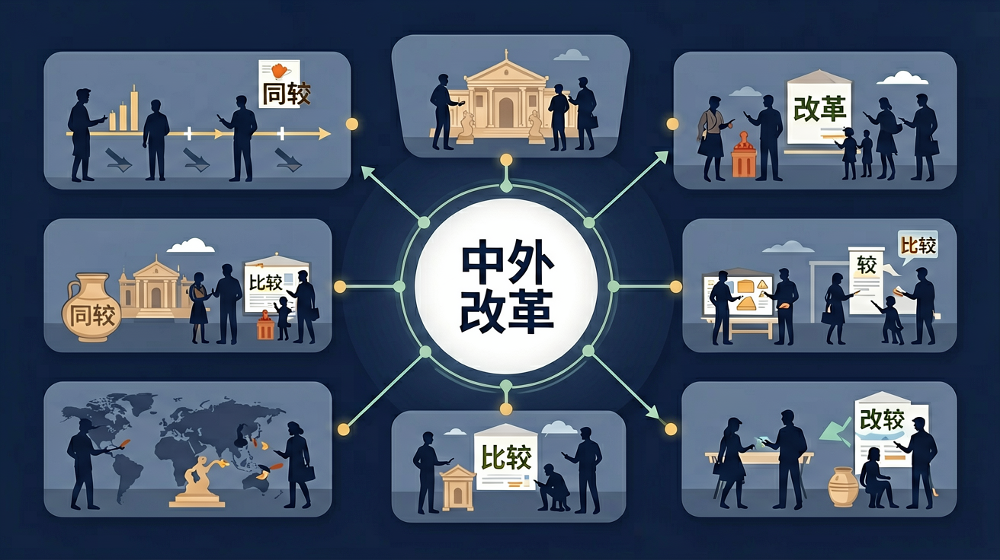

❓ 为什么商鞅变法成功了但王安石变法却失败了？
❓ 明治维新和洋务运动都是向西方学习，结果为啥差这么多？
❓ 改革开放和罗斯福新政有啥可比性吗？
学完这一课，这些问题你都能自信地回答。
🎯 能说出中外改革典型案例的3个共同动因
🎯 能比较中外改革在推动力量上的本质差异
🎯 能分析地理环境对改革路径选择的影响
商鞅变法中'废井田开阡陌'直接推动了：
明治维新与戊戌变法根本不同在于：
中外改革比较是高中历史的重要内容。高中12年级学段目标：理解并掌握「中外改革比较」的基本概念与方法
学业要求：能在真实情境中识别、运用「中外改革比较」解决问题
改革是在不彻底打碎旧政权前提下的制度调整。如商鞅变法、孝文帝改革、王安石变法、明治维新、俄国农奴制改革、戊戌变法等，成败取决于既得利益、国际环境、改革策略与社会基础。
点击时代/图层按钮切换地图；悬停边界，点击城市标记查看说明。
错误1：将"明治维新成功"与"戊戌变法失败"简单归因于个人能力。学生常认为明治天皇比光绪帝更有魄力。实际上，日本改革派掌握实权（1868年西南强藩军队占全国兵力73%），而中国维新派仅有103天且无军权。认知根源是英雄史观影响，正确理解需考察社会结构——日本武士阶层转化（1876年《废刀令》后30万武士转业），而中国科举制直到1905年才废除。
错误2：认为"商鞅变法与梭伦改革都促进平等"。商鞅的军功爵制（斩一首爵一级）强化集权，梭伦按财产分四等级（pentacosiomedimnoi年收入500麦斗以上）建立的是奴隶制民主。认知根源是把"改革"等同于"进步"，正确理解需区分改革目标：秦国为战争动员（斩首计功制使秦军斩首数从公元前364年2万增至前260年长平45万），雅典则是缓解平民债务危机（前594年解除"六一汉"债务奴隶）。
错误3：混淆"凯末尔改革世俗化"与"洋务运动中体西用"。1924年凯末尔直接废除哈里发制度，而洋务派坚持"三纲五常"。认知根源是忽视文化深层结构，正确理解要看制度变革程度：土耳其用拉丁字母替代阿拉伯字母（1928年实施），而中国同文馆1862年成立后仍以四书五经为必修课。
复制提示词到 AI 学伴，生成「中外改革比较」的时间轴或事件提纲；也可以上传你手绘的示意图，请 AI 学伴点评。
复制后可粘贴到 AI 学伴继续对话。
比较题用同一框架列表。成功者多能与强兵富国目标结合并持续推进；失败者常因统治集团分裂或民族危机过深。
常见误区：常见误区是成王败寇式评价，忽视改革的长期思想与社会影响。
比较中外改革时，最应关注？
应用1：跨国企业并购中的文化整合。2016年吉利收购沃尔沃时，参考明治维新"和魂洋才"经验——保留瑞典设计团队（类似日本保留天皇制），但引入中国成本控制（如共享CMA平台节省30%研发费）。这与19世纪日本引进德国医学但保留汉方药的传统如出一辙。
应用2：新冠疫苗技术路线选择。中国灭活疫苗与欧美mRNA疫苗的比较，类似洋务运动"器物层面"改革与明治维新"制度层面"改革的差异。科兴疫苗2021年产能达20亿剂（量优先），辉瑞疫苗则侧重技术突破（有效率95%），这恰如江南制造局年产枪炮数万与佐贺藩精炼所研制日本首台蒸汽机的区别。
应用3：城市更新政策评估。北京胡同改造借鉴了彼得大帝改革经验——强制贵族迁居圣彼得堡（1703年法令）与北京疏散非首都功能（2017年雄安新区规划）都面临传统与现代的平衡。大数据显示，圣彼得堡建成后50年贵族搬迁率达82%，而北京核心区人口2015-2020年下降12.7%。
问题1：为什么同样面临西方冲击，俄国1861年农奴制改革能解放2300万农奴，而清王朝却做不到？分析线索：比较两者社会结构——俄国地主获得赎金（政府垫付49%贷款），中国士绅通过科举维持特权（19世纪捐纳官职占总数37%）；再看军事压力，克里米亚战争（1856年塞瓦斯托波尔陷落）比鸦片战争更具威胁性。
问题2：罗斯福新政（1933年成立AAA削减30%农产品）与邓小平改革开放（1978年包产到户）都涉及农业改革，但为何前者用政府干预后者用市场放开？思考方向：比较经济基础——美国1930年城市化率56%，中国1978年仅18%；再看国际环境，大萧条时贸易保护主义盛行（斯姆特-霍利关税达60%），而中国改革开放恰逢全球化浪潮（1980年世行提供首笔2亿美元贷款）。
中外改革比较的起点是理解"改革"本质——在保持根本制度前提下调整生产关系。先看古代案例：公元前359年商鞅"废井田"与公元前133年格拉古兄弟土地改革，都试图解决土地兼并（秦国"民有二男以上不分异者倍其赋"，罗马限定每人占公地500犹格），但结局迥异源于权力基础（秦孝公全力支持，提比略·格拉古被元老院杀害）。接着分析近代化改革：1868年日本版籍奉还（全国280藩主交还土地册籍）与1898年中国戊戌变法（103天内颁布184条谕令）的最大差异在于改革派与旧势力的力量对比（萨摩藩兵力占全国1/4vs维新派无兵权）。最后聚焦方法论：比较20世纪土耳其凯末尔改革（1928年废除阿拉伯字母使文盲率5年内从90%降至50%）与伊朗巴列维白色革命（1963年土地改革使地主比例从70%降至20%），会发现宗教因素比经济因素更关键——土耳其世俗精英掌权，伊朗宗教阶层始终保有瓦克夫土地。当比较戈尔巴乔夫改革（1985年加速战略导致GDP年增从2.3%降至-4%）与中国改革开放（1978-1989年GDP年均增9.7%）时，渐进式双轨制（价格闯关vs乡镇企业）与政治体制改革顺序成为关键变量。
迁移任务：找一道与「中外改革比较」相关的练习题或生活情境，用本课方法完整解答一遍。
把卡片拖到核心概念 / 方法技能 / 应用情境 / 常见误区。
拖完 4 项后自动判分。
高中12年级学段目标：理解并掌握「中外改革比较」的基本概念与方法
关于改革主导力量，正确的图示是（箭头代表变革方向）
分析展览提供的1889年日本工厂分布图与2001年中国加入WTO文件
先独立作答，再点选项查看对错与错因。
展览中某展板对比了两国改革措施：中国1978年实行家庭联产承包责任制，日本1873年颁布《地税改革条例》。这主要反映改革的共同点是
策展组讨论改革背景时，能同时解释中日两国改革起因的是
观众留言板出现争论：'日本改革30年就成为列强，中国改革40年才崛起，说明明治维新更成功。'该观点主要错在
展览时间轴显示，日本明治政府____年颁布《大日本帝国宪法》，中国全国人大____年通过《中华人民共和国宪法修正案》确立社会主义市场经济体制。
答案：1889 1993
关键时间节点对比
策展组用柱状图对比改革成效：日本1870-1900年工业产值增长____倍，中国1978-2018年GDP增长____倍。
答案：12 35
反映不同时期的经济发展速度
（高考真题）俄国1861年改革与日本明治维新共同点是：
（迁移题）比较中国家庭联产承包责任制与英国圈地运动，能说明：
（情境题）某国改革中出现'旧制度瓦解但新制度未定型'现象，类似：
✅ 根本在于是否解决社会主要矛盾
💡 英雄史观影响
✅ 英国渐进式改革与法国革命式改革本质不同
💡 线性发展观局限
口诀：经济基础定方向，文化传统塑模样，领导力量决存亡
类比：改革像手机系统升级：既要兼容旧APP（传统），又要支持新功能（发展）
复述本课两个核心概念的定义。
用本课方法分析一个新例子。
有同学认为：认为改革成败由统治者个人意志决定 —— 请说明错在哪里。
有同学认为：把西方改革简单等同于资本主义化 —— 请说明错在哪里。
把还没弄明白的地方写下来问 AI 学伴。它会先帮你找到卡住的地方，再给你一个小小的提示，让你自己往前走一步。